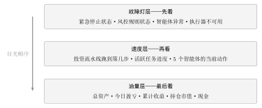
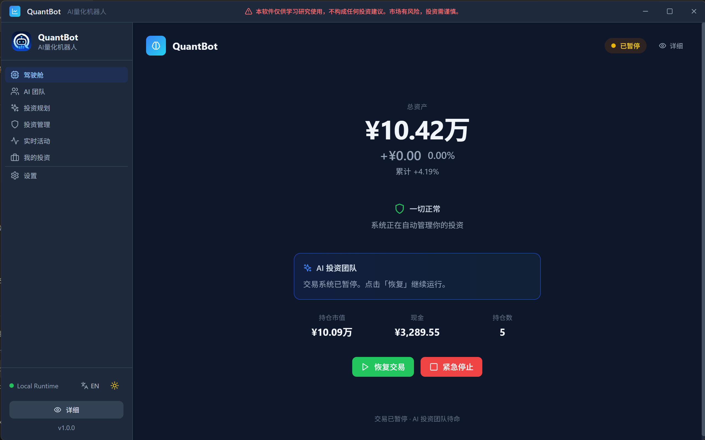
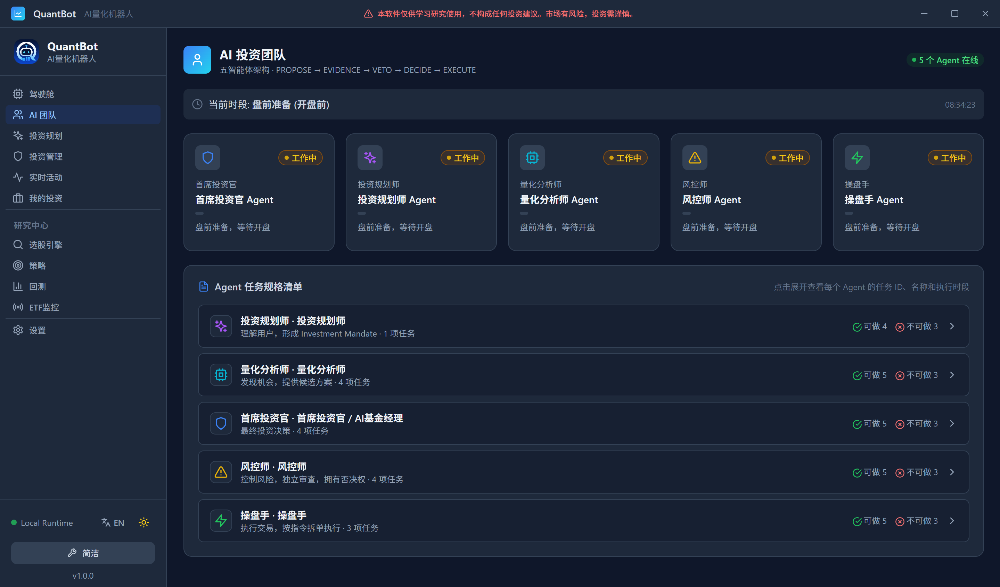
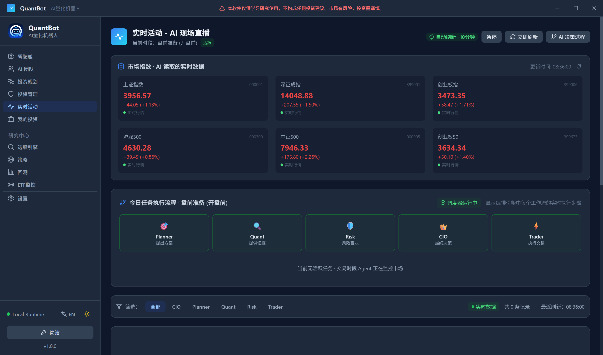

第二十七章读懂仪表盘：控制中心、AI 团队与实时活动
27.1屏幕上全是数字，先看哪一个
第 第二十六章 章结束时，系统里已经有一份属于你的投资方案和一个股票池。第二天我打开程序，落在了控制中心。 我数了一下那一屏：五张指标卡、一句 CIO 今日状态、四张小头像、三个风险数字、一张持仓表、一列决策卡片。十几个数字同时在动。 我当时的做法很没出息：我盯着“今日盈亏”看。因为它是红的，因为它最像“成绩单”，因为我唯一看得懂它。 接下来的半小时里我做了三件蠢事。第一件，我看见 AI 团队页里操盘手那张卡写着“待命”，立刻以为它挂了。第二件，我看见实时活动页整页写着“休市中，等待下一交易日”，更确信系统坏了。第三件，我盯着那个不动的“今日盈亏”来回刷新，想让它动起来。 三件事的根因是同一个：我默认这三个页面是同一份数字的三个视图。它们不是。它们回答三个完全不同的问题，而且刷新节奏不同——所以同一时刻，三个页面上的数字本来就可以对不上。 本章要做的，就是把这三个页面按“先看什么”的顺序摆清楚。27.2先看故障灯，再看速度，最后看油量
坐进车里的第一眼，我看的是仪表盘上那一排故障灯：机油、水温、电瓶、刹车。灯亮了，速度表和油表都别看了——先靠边停车。
灯全灭，我再看速度：车在动吗，动得快不快，有没有超速。
最后才看油量：还能跑多远，什么时候该进加油站。
这个顺序不是习惯，是被逼出来的逻辑。故障灯回答的是“还能不能继续”，它决定后面两类数字还有没有意义；速度回答的是“正在发生什么”；油量回答的是“存量还剩多少”。
存量类的数字永远最后看。因为它变化最慢，也最不紧急——它是前两者长期累积出来的结果，你盯着它看，它也不会因为你看得快而涨得快。

27.3三个页面，三个问题
27.3.1控制中心：钱还剩多少
控制中心是默认页。它在ui/src/App.tsx 的路由 switch 里对应那个 default 分支——也就是说，地址栏里的 hash 是空的、或者写了任何页面都不认识的值，落到的都是它。
它的第一行是五张卡片，从左到右：
- 总资产（存量总量）；
- 今日盈亏（带百分比，当日增量）；
- 累计收益（把当日视角拉到全周期）；
- 持仓市值（钱有多少在股票里）；
- 持仓/现金（“N 只”加一行“现金 …”，钱有多少在账上）。
cioStatus.todayMessage），加四张小卡。
这里有个我照实写下来的细节：四张小卡是 CIO、QUANT、RISK、TRADER，没有 PLANNER系统源码 ui/src/pages/Dashboard.tsx 的 teamStatus 数组（4 条记录），以及第 第二章 章讨论过的五个角色定义 internal/agentworkflow/models.go。核对时间 2026-09-24。2。这是排版取舍：投资规划师的活是“每天一次”的目标与方案维护，不是盘中状态；控制中心这块要的是“此刻谁在盯盘”。五个角色是完整的组织，四个头像只是“值班表”。
右边是 风险监控：持仓集中度（取所有持仓权重的绝对值最大值，超过 30 标成黄色——与硬限制里的单票 30% 是同一个口径）、最大单票名字、未实现盈亏，最后一行是风控规则状态。它属于第一层：这行字一变黄变红，上面的收益数字就先别看了。
第三行是 持仓分布表和 AI 今日决策列表。持仓表每页 5 条（源码里 HOLDINGS_PAGE_SIZE = 5），三列：股票名称（代码）、持仓量、盈亏。分的不是“重要不重要”，是“屏幕高度有限”：持仓数按资金规模动态调整，5 万资金推荐 5 只，钱多了就不止 5 只。
AI 今日决策读的是 GetCIOJournal(7)——最近 7 天的 CIO 决策日志，屏上最多展示 5 条。每条上有三样东西值得看：决策类型的中文标签（建仓、加仓、减仓、调仓、观望、持有、买入、卖出、暂停）、风控审批的那三个符号（通过 / 否决 / 审核中）、以及理由那一行字。第 第二十八章 章会把这一行字逐块拆开，这里只需要知道它在这个页面上是“摘要版”。
最后是刷新。控制中心的自动刷新间隔是 5 分钟系统源码 ui/src/pages/Dashboard.tsx：轮询函数末尾 timer = window.setTimeout(poll, 300000)，即 300 000 ms \(=5\) 分钟；且是“顺序轮询”——本次刷新跑完才安排下一次。核对时间 2026-09-24。3。而且它不是单纯重读一遍数字，每一轮先调 RefreshPrices 拉一次最新价，再读组合状态、再读决策日志。这一句很重要，本章第四节会用它解释“为什么这个页面不敢刷新得太快”。
控制中心还有简洁/详细两种显示模式（右上角那个“简洁/详细”按钮切换），简洁模式只留总资产、今日盈亏、累计收益加一行状态。它是给“我每天只看一眼”的那类用户留的。
本节起，界面部分的说明都配一张实拍截图。这些截图取自系统真实运行时的界面（深色主题，原始分辨率约 \(2.6\)K），未作美化、未作裁剪；图中出现的股票代码与金额，就是那一刻数据库里的真实记录。

27.3.2AI 团队：谁在干活、谁有权干什么
AI 团队的地址是 /#ai-team。它问的问题是：“此刻这五个智能体在干什么，而且它们各自被允许干什么。” 第一屏最上面不是卡片，是一行时段指示：phaseLabels[currentPhase]，也就是“上午交易 (09:30-11:30)”这类中文时段名，右边跟着当前时间。为什么把时段放在第一屏？因为这个页面上几乎所有的“状态”都是时段推导出来的，不是查出来的。
下面那五张智能体卡片，每张有三样：一个三色状态标签（正常=绿、工作中=黄、异常=红）、一句“当前动作”、一个任务状态徽章（执行中 / 已完成 / 有错误 / 等待中，后面跟“N 项”）。
状态是怎么来的，值得一句一句说清楚，因为“AI 在休息”这个误解就是从这儿长出来的：
- 开盘前（准备段）：一排“盘前准备，等待开盘”；
- 盘前竞价段：一排“盘前准备中”；
- 上午、下午交易段：按分工分道——操盘手“执行交易中”，风控师“盘中风险监控”，首席投资官“决策评估中”，量化分析师“等待交易信号”，规划师“监控市场变化”；
- 午休：整排“午休中”（源码里的状态常量是
RESTING）； - 盘后：一排“盘后确认交易中”；
- 复盘段：17 点之后（或 16 点之前）显示“今日任务已完成”，首席投资官换成“今日投资报告已生成”；16 点到 17 点之间显示“执行盘后任务中”；
- 休市：一排“休市中，等待下一交易日”。
ui/src/pages/AITeam.tsx 的 agentTasks 逐条计数；同一段代码上方的注释写的是“与后台 getOptimizedTasks 一一对应，共16任务”，与清单实际条数不一致，本书照实记录。核对时间 2026-09-24。4。同一份代码里，注释说 16，清单是 17——我没改它，因为这类“注释漂移”正是第 第二章 章讲过的同一件事：判断权限和职责，要看表里写了什么，不要看注释写了什么。
这一页的第三样东西是 权限矩阵：8 个操作权限 × 5 个角色，绿色表示可执行、灰色表示不可执行。本节把其中最要紧的 8 条抽出来排成表 27.1。
| 权限项 | 中文 | 规划师 | 量化 | 风控 | CIO | 操盘手 |
CREATE_INVESTMENT_PLAN | 创建投资方案 | 可 | --- | --- | --- | --- |
GENERATE_STOCK_CANDIDATES | 生成候选池 | --- | 可 | --- | --- | --- |
SELECT_ASSET | 选股 | --- | --- | --- | 可 | --- |
SET_TARGET_WEIGHT | 设定目标权重 | --- | --- | --- | 可 | --- |
APPROVE_INVESTMENT | 批准投资 | --- | --- | --- | 可 | --- |
RISK_REJECT | 风险否决 | --- | --- | 可 | --- | --- |
EMERGENCY_FREEZE | 紧急冻结 | --- | --- | 可 | --- | --- |
SUBMIT_ORDER | 提交订单 | --- | --- | --- | --- | 可 |
这 8 行是本书从代码里的默认矩阵里挑出的“操作级”条目；矩阵本身按角色分行、条目更多（首席投资官一行就有 9 条）。矩阵里还写着负向权限：规划师、量化、风控三行都挂着“禁止批准投资”与“禁止执行订单”，操盘手一行挂着“禁止选股”“禁止修改目标权重”“禁止绕过风控”。
系统源码 internal/agentworkflow/models.go 的 PermissionMatrix 与权限常量区（第 49--143 行）；前端渲染口径见 docs/用户操作手册.md 第 5 节与本书系统事实清单第 3 节。核对时间 2026-09-24。
setInterval(loadAgentTasks, 30000)），时段状态每 60 秒重算一次系统源码 ui/src/pages/AITeam.tsx：任务轮询 30 000 ms，时段与状态重算 60 000 ms。核对时间 2026-09-24。5。它比控制中心快 10 倍，第四节会解释为什么它敢这么快。

PROPOSE \(\to\) EVIDENCE \(\to\) VETO \(\to\) DECIDE \(\to\) EXECUTE）与 Agent 任务规格清单27.3.3实时活动：现在跑到哪一步
实时活动的地址是 /#activity；如果你用的是旧地址 /#workflow，也会落到同一页——路由表里这两个分支返回的是同一个组件系统源码ui/src/App.tsx 的路由 switch：case '/workflow' 与 case '/activity' 都返回 Activity。核对时间 2026-09-24。6。这一页问的问题是：“现在跑到哪一步了。”
第一块是 投资流水线：五格横排，PLANNER → QUANT → RISK → CIO → TRADER，每格下面写着它在这条链上唯一被允许推进的那一步——提出方案、提供证据、风险否决、最终决策、执行交易（PROPOSE、EVIDENCE、VETO、DECIDE、EXECUTE）。正在干活的那格有一条进度条，干完的打勾，午休那种“休息中”显示黄字“休息中”。
为什么用进度条，而不是像下面那块一样直接铺日志？因为这两个东西回答的问题不同：日志回答“之前发生过什么”，进度条回答“此时此刻卡在链条的哪一环”。我在开头那半小时里，就是缺了这一格：我盯着日志从下往上翻，翻到“午休中”才反应过来，其实最上面那排格子早就告诉我全队都在休息。
第二块是 活跃任务详情：从五个角色里找出当前状态属于“工作中 / 执行中 / 监控中”的那一个，显示它的进度百分比、当前任务名、以及今日任务的前三条。如果一个活跃的都没有，它就按时段给两句不同的话——交易时段说“当前无活跃任务 · 交易时段 Agent 正在监控市场”，非交易时段说“当前无活跃任务 · 非交易时段 Agent 自动进入休眠”。
第三块是 活动日志：可以按角色筛（全部 / CIO / Planner / Quant / Risk / Trader），记录按五类着色（研究分析、决策、风控检查、执行交易、警报），最多保留 200 条，最新一条加个“NEW”的高亮。这条流的上游是两处：今日的团队活动，加最新一批智能体任务日志。
再往下是 5 个 Agent 工作明细：五张小卡各带一条进度条，点一张卡，下面就是这位智能体今天的任务日志。
还有两块小东西：一块是 市场指数卡，只留上证指数、深证成指、创业板指——这就是 AI 实际读到的实时行情；另一块是右上角的 调度器状态徽章，绿色“调度器运行中”，或者红色“执行器不可用”。后面这个属于故障灯层，看见了就得去查，别等它自己好。
一定要说清楚的是自动刷新，因为它在三个页面里最特殊：它的间隔不是写死的 5 分钟，而是从设置里读一个数（activity_refresh_minutes，取值范围 1--60 分钟，默认 5）系统源码 ui/src/pages/Activity.tsx 与 AIQuant/internal/config/config.go（ActivityRefreshMinutes 字段）；设置项见「设置-通用」。核对时间 2026-09-24。7；而且它只在交易时段刷新，非交易时段整页就是静止的；右上角还能把自动刷新整个暂停。所以这一页上的时间戳“最近刷新：…”是判断它有没有在干活的最快办法。
最后，我要为一条手册里写了、但代码里还没接上的功能留一句实话：用户手册把“今日交易记录”（今日买入/卖出笔数与明细）列为这一页的功能，但当前代码里负责转换交易记录的那个函数带下划线前缀（_convertTradeToActivity），也就是没有被调用系统源码 ui/src/pages/Activity.tsx：TodayTrade 接口与 _convertTradeToActivity 均存在，但函数未被任何组件引用；对照 docs/用户操作手册.md 第 7 节“今日交易记录”。核对时间 2026-09-24。8。这种“文档说有了、代码里是预留”的地方，我不替它圆场——你去看页面，看不到那张表，就是没接上。

27.4近似模型 \(\to\) 严谨版本：刷新间隔决定陈旧度
到这里，“三个页面各自回答什么”已经清楚了。剩最后一件事，也是我在开头那半小时里真正困惑的事：为什么控制中心 5 分钟刷一次，AI 团队 30 秒刷一次？为什么不能都设成 1 秒？ 先给一个差不多对的模型：刷新越快，你看到的越新。 这个模型在“越快越好”的方向上是对的，但它漏了两件事：一是你看到的永远是过去某个时刻的值，“实时”是不存在的；二是每次刷新是有成本的，而且成本还不一样。把这两件事写下来，就成了下面这个命题。 先约定记号。设某个看板指标的真实取值随时间变化，写成函数 \(x(t)\)；看板每隔 \(\Delta\) 秒刷新一次，所以你看到的是 \(x\) 在上一次刷新时刻的值。两次刷新之间隔了多久，取决于你什么时候抬眼——把这个“相位”记成 \(\delta(t)\)，它落在 \([0,\Delta)\) 里。于是你看到的陈旧程度是\[e(t)=x(t)-x\bigl(t-\delta(t)\bigr), \tag{27.1}\]
\(\abs{e(t)}\) 越大，说明屏上的数字离真相越远。这个 \(e\) 就是陈旧度（staleness）。
假设 27.1（指标变化率的 Lipschitz 界）
存在常数 \(M\ge0\)，使得对一切 \(t,s\) 都有
\[\abs{x(t)-x(s)}\le M\,\abs{t-s}. \tag{27.2}\]
称 \(M\) 为该指标的最大变化率。
命题 27.2（刷新间隔、陈旧度与成本的三方权衡）
设指标 \(x\) 满足假设 27.1，刷新间隔为 \(\Delta>0\)，刷新时刻取 \(\tau_k=k\Delta\)（\(k\in\mathbb{Z}\)），相位 \(\delta(t)=t-\Delta\lfloor t/\Delta\rfloor\)。则：
(a)（陈旧度上界） 对一切 \(t\)，
\[\abs{e(t)}\le M\Delta . \tag{27.3}\]
(b)（上界是紧的） 取 \(x(t)=Mt\)（\(M>0\)），则 \(\sup_t\abs{e(t)}=M\Delta\)，即 式 (27.3) 不能再收紧。
(c)（给定陈旧度上限的最小刷新频率） 若要求对一切 \(t\) 有 \(\abs{e(t)}\le\varepsilon\)（\(\varepsilon>0\)），则必须
\[\Delta\le\frac{\varepsilon}{M},
\qquad\text{也就是}\qquad
\frac1\Delta\ge\frac{M}{\varepsilon}. \tag{27.4}\]
(d)（成本） 设单次刷新的成本为 \(c>0\)（它可以是钱，也可以是接口配额或电量），单位时间成本预算为 \(\hat C>0\)。则预算约束等价于
\[\Delta\ge\frac{c}{\hat C}, \tag{27.5}\]
可行区间为 \(\bigl[c/\hat C,\ \varepsilon/M\bigr]\)，它非空当且仅当
\[M c\le \hat C\,\varepsilon . \tag{27.6}\]
在可行时，最不陈旧的刷新间隔是 \(\Delta^\ast=c/\hat C\)。
证明■
先把相位的取值范围算实。设 \(k(t)=\lfloor t/\Delta\rfloor\)，则按下取整的定义 \(k(t)\Delta\le t<(k(t)+1)\Delta\)。三段同减 \(k(t)\Delta\)，得 \(0\le\delta(t)<\Delta\)。
(a) 注意 \(t-\delta(t)=k(t)\Delta\) 恰好是一个刷新时刻，所以可以直接把假设 27.1 用在 \(t\) 与 \(t-\delta(t)\) 这组点上：
\[\abs{e(t)}=\abs{x(t)-x\bigl(t-\delta(t)\bigr)}
\le M\,\abs{t-\bigl(t-\delta(t)\bigr)}=M\,\delta(t)<M\Delta . \tag{27.7}\]
最后一步用了 \(\delta(t)<\Delta\)，于是 式 (27.3) 成立（取 \(\le\) 是因为要的是上界）。
(b) 取 \(x(t)=Mt\)。先算它的 Lipschitz 常数：\(\abs{x(t)-x(s)}=M\abs{t-s}\)，所以 \(M\) 正是它的最大变化率，假设 27.1 被恰好取等。代入 式 (27.1)：
\[e(t)=Mt-M\bigl(t-\delta(t)\bigr)=M\,\delta(t). \tag{27.8}\]
现在取一串 \(t_\eta=\Delta-\eta\)，让 \(\eta\) 从正的一侧趋近于 \(0\)。因为 \(t_\eta\in(0,\Delta)\)，它落在第一个刷新周期里，\(\delta(t_\eta)=t_\eta=\Delta-\eta\)，于是 \(\abs{e(t_\eta)}=M(\Delta-\eta)\)。令 \(\eta\to0^+\)，得到 \(\sup_t\abs{e(t)}\ge M\Delta\)；结合 (a) 的 \(\le M\Delta\)，两边相等。上界取到，所以它是紧的。
(c) 用反证。设 \(\Delta>\varepsilon/M\)。取 \(t=\varepsilon/M+\eta\)，其中 \(\eta>0\) 取得足够小，使 \(t<\Delta\)（这样的 \(\eta\) 存在，因为 \(\varepsilon/M<\Delta\)）。此时 \(t\in(0,\Delta)\)，故 \(\delta(t)=t\)，代回 (b) 里算过的那条等式：
\[\abs{e(t)}=M\,t=M\Bigl(\frac{\varepsilon}{M}+\eta\Bigr)=\varepsilon+M\eta>\varepsilon . \tag{27.9}\]
这与“对一切 \(t\) 有 \(\abs{e(t)}\le\varepsilon\)”矛盾。所以必须 \(\Delta\le\varepsilon/M\)，两边取倒数（都是正数，不等号反向）得 \(1/\Delta\ge M/\varepsilon\)，即 式 (27.4)。
(d) 单位时间里发生的刷新次数是 \(1/\Delta\)，所以单位时间成本是 \(c/\Delta\)。要求它不超过预算：
\[\frac{c}{\Delta}\le\hat C
\ \Longleftrightarrow\
c\le\hat C\,\Delta
\ \Longleftrightarrow\
\Delta\ge\frac{c}{\hat C}, \tag{27.10}\]
第二个等价号两边同除以正数 \(\hat C\)，第三个等价号两边同除以正数 \(\Delta\) 并移项——每一步都是同解变形，不等号方向不变。这就是 式 (27.5)。
把它和 (c) 的 \(\Delta\le\varepsilon/M\) 合并，\(\Delta\) 必须同时落在两个区间里，故可行集为 \(\bigl[c/\hat C,\ \varepsilon/M\bigr]\)。实数区间非空当且仅当下端点不超过上端点，即 \(c/\hat C\le\varepsilon/M\)，两边同乘正数 \(\hat C M\) 得 \(Mc\le\hat C\varepsilon\)，即 式 (27.6)。
最后，在可行集里“最不陈旧”等于取最小的 \(\Delta\)（由 (a)，\(M\Delta\) 关于 \(\Delta\) 单调增），故 \(\Delta^\ast=c/\hat C\)；此时上界 \(M\Delta^\ast=Mc/\hat C\le\varepsilon\)，恰好不超过允许值。
注 27.3（数据自己的节奏：有效刷新间隔）
命题 27.2 里的 \(x\) 是连续的。真实系统里还有第二道闸门：数据源本身多久产生一次新值。
调度器是每 30 秒醒一次的，六维判势的实时快照也是 30 秒去抖一次系统事实清单第 6 节（AutoScheduler 主循环 30 秒 ticker）与第 8 节（六维实时快照 30 秒缓存去抖）；源码 internal/scheduler/auto_scheduler.go。核对时间 2026-09-24。9。设数据每隔 \(\Delta_0\) 秒才可能变一次。当 \(\Delta<\Delta_0\) 时，相邻两次刷新之间 \(x\) 根本取同一个值，\(e(t)\) 一点也没变小，而成本 \(c/\Delta\) 却按比例上升。
所以实用的选择不是 \(\Delta^\ast\)，而是
\[\Delta_{\text{eff}}=\max\bigl\{\Delta^\ast,\ \Delta_0\bigr\}. \tag{27.11}\]
这解释了 AI 团队页为什么是 30 秒而不是 1 秒：它的数据本来就被后端每 30 秒写一次，刷得再快也只能重复读到同一个值。
RefreshPrices 拉一次实时行情（要走进数据源、可能走外部网络），再重算一遍组合状态。\(c\) 大，则 \(\Delta^\ast=c/\hat C\) 大，所以它的 5 分钟不是“慢”，是“贵”换来的。
AI 团队的 \(c\) 很小：它只调一次 GetAllAgentTasks，查本地数据库。\(c\) 小，\(\Delta^\ast\) 就小，于是 30 秒在预算内是合理的——再加上它的数据节奏 \(\Delta_0\) 本来就是 30 秒，按前述备注，\(\Delta_{\text{eff}}\) 恰好就是 30 秒。
实时活动介于两者之间：它要读本地库（便宜）、要拉指数行情（贵），所以它给用户一个 1--60 分钟的可调旋钮，默认 5 分钟，并且只在交易时段刷。把“多久刷一次”做成用户可调，等于把命题里的 \(\hat C\) 交给用户自己填。
这一节想说的最后一句话是：看板上的“实时”不是一个形容词，是一个被两个数字夹住的区间。 上端是 \(M/\varepsilon\)，下端是 \(c/\hat C\)。
27.5它在系统里长什么样
先把三个页面摆成一张表。| 页面 | 路由 | 回答的问题与关键区块 | 刷新 |
| 控制中心 | #/（默认） | 钱还剩多少 / 系统健不健康：五张指标卡、CIO 今日状态、风险监控、持仓分布、AI 今日决策 | 5 分钟 |
| AI 团队 | #/ai-team | 谁在干活、谁有权干什么：5 张智能体卡、市场时段指示、任务规格清单、8\(\times\)5 权限矩阵 | 30 秒（任务）/ 60 秒（时段） |
| 实时活动 | #/activity（旧 #/workflow） | 现在跑到哪一步：投资流水线、活跃任务详情、活动日志、5 个 Agent 工作明细、市场指数 | 默认 5 分钟，1--60 分钟可调，可暂停，非交易时段不刷 |
路由名采自源码里的 hash 值；“关键区块”只列每一页最上面的几块，不含全部控件。
ui/src/App.tsx 的路由 switch、ui/src/pages/Dashboard.tsx、ui/src/pages/AITeam.tsx、ui/src/pages/Activity.tsx；刷新节奏见各文件内的定时器与 internal/config/config.go 的 activity_refresh_minutes。核对时间 2026-09-24。
stock.ohlc 表里有 10 041 34310 行 K 线，覆盖 9 584 个代码。看板不是自己算价，它只是把库里最近的一条读出来。
第三件是一位老朋友：三个页面的“数字在不在动”，取决于时段，而时段的判定只有一处实现——internal/util/trading_hours.go。控制中心不等时段也照刷（它会拉行情，非交易时段拿回来的是上一笔），AI 团队按 30 秒刷任务、按 60 秒重算时段，实时活动则干脆在非交易时段停手。同一件事在三个页面里有三种处理，原因都在命题 27.2 的 (d) 那一项成本里。
27.6常见误解与纠偏
不是。它读的是数据库里的快照。
这句话解释了一类很常见的困惑：“我手动加了一下持仓市值，和页面上那个总资产对不上，差了几十块。” 差的那几十块，来自快照的时间点与你心算的时间点不同。
系统在这个地方的取舍是明确的：持仓状态以数据库为准，而后端每次被问到时，会先拿最近一次收盘快照加上快照之后的成交做一次强制对账，再把结果返回给前端。也就是说，屏幕上的数字永远是“某一次对账的结果”，不是“此刻的算账结果”。
这条规矩在第 第二十九章 章还会再出现一次，而且会更刺眼：当日盈亏以交易日为界，15:00 之后它就不再刷新了——你晚上盯着它看，它当然不动。
我开头那半小时，就是想当然地掉进了这个坑。
真实情况是：非交易时段它本来就该睡。AI 团队页在休市时把五个角色都标成“休市中，等待下一交易日”；午休时整排“午休中”；实时活动页在非交易时段写着“当前无活跃任务 · 非交易时段 Agent 自动进入休眠”，而且那一页干脆停止自动刷新。
这套设计不是“偷懒省算力”这么简单。它对应第 第五章 章那张时段表：一个每 30 秒醒一次的状态机，醒来第一件事是看时段——午休那一个半小时里多算一次纯属浪费，晚上八点算出来的也不是“现在”，是“明天”。
所以判断“是不是坏了”，不要看动作有没有在动，要看三处硬证据：控制中心顶栏的状态徽章是不是黄的“停止”、实时活动右上是不是红的“执行器不可用”、以及智能体卡片上有没有红色的“异常”。这三个都不亮，它就是睡着了。
不是。它们的刷新节奏不一样（5 分钟 / 30 秒 / 可暂停），所以同一时刻，三个页面上的数字本来就可以不一致。
这与命题 27.2 说的是一件事：两个页面的陈旧度上界分别是 \(M\Delta_1\) 和 \(M\Delta_2\)，只要 \(\Delta_1\ne\Delta_2\)，它们的读数就不可能时时相同。
更要紧的是数据来源也不同：控制中心的决策列表读的是最近 7 天的决策日志（屏上只显示 5 条）；实时活动的日志读的是今日团队活动加最新任务日志（最多 200 条，最新一条标“NEW”）。同一个上午发生的同一件事，在这两页上可能一处早就刷过去了、另一处还停在两分钟前。
正确的用法是：判断“要不要动手”看故障灯层，“现在怎么了”看实时活动，“最后亏了多少”再看控制中心。 想让三页同步，只有一个办法——把实时活动那个刷新旋钮调到和你想看的节奏一致。
27.7真实出处
- 控制中心页面（五张指标卡、CIO 今日状态、风险监控、持仓分布分页、AI 今日决策、5 分钟顺序轮询、简洁/详细两模式）：
ui/src/pages/Dashboard.tsx - AI 团队页面（5 张智能体卡、时段驱动的状态映射、任务规格清单、8\(\times\)5 权限矩阵、30 秒任务轮询）：
ui/src/pages/AITeam.tsx - 实时活动页面（投资流水线、活跃任务详情、活动日志筛选、5 个 Agent 工作明细、市场指数卡、调度器徽章、可暂停的自动刷新）：
ui/src/pages/Activity.tsx - 旧工作流页与编排视图（活跃工作流、工作流模板、智能体待办）：
ui/src/pages/Workflow.tsx - hash 路由与 #/workflow 到实时活动的重定向：
ui/src/App.tsx - 前端角色名、状态标签、角色职责的“可做 / 不可做”清单：
ui/src/types/index.ts - 角色定义、任务类型与状态、默认权限矩阵与权限常量：
internal/agentworkflow/models.go、internal/agentworkflow/permissions.go - 市场时段枚举与判定（
GetMarketPhase、PhaseLabels）：internal/util/trading_hours.go - 30 秒调度扫描与盘中 300 秒重复间隔：
internal/scheduler/auto_scheduler.go（另见本书系统事实清单第 6 节） - 实时活动刷新分钟数的配置项：
internal/config/config.go（ActivityRefreshMinutes） - 页面功能对照（控制中心 5 分钟刷新的用户侧口径、AI 团队 30 秒、实时活动可暂停）：
docs/用户操作手册.md第 4--7 节
动手试一试（十五分钟）
- 依次打开三个页面，每页停留三分钟。用的方法是只记“哪些数字在动”：控制中心里“今日盈亏”和“总资产”会在刷新时一起跳一下；AI 团队的当前动作会在时段切换那一刻整排改口；实时活动的日志会从上往下推。记完把三页的“在动的数字”列成三行，你会发现三行的长度差别很大——那就是 \(\Delta\) 的差别。
- 回到 AI 团队页，展开风控师那一行，把“不能做”清单读一遍；再对照表 27.1 的“风险否决”那一行横着看。然后回答一句话：谁能下单？写完再去操盘手那一行核对——只有它的“可以”里没有决策类动作。
- 把系统时间（或挑一个非交易时段）调到休市状态，观察三处：AI 团队整排“休市中，等待下一交易日”、实时活动“非交易时段 Agent 自动进入休眠”、控制中心的状态徽章。确认这三处都不亮红黄之后，你就学会了“睡着”和“坏了”的分辨法。
- 在实时活动页右上角点一下，把自动刷新暂停，盯着“最近刷新：…”那行字看它不再变；再点回来。顺便把设置里的刷新分钟数改小一格（比如从 5 改成 3），回到页面确认徽章上的文字跟着变了——这就是命题 27.2 里那个 \(\hat C\) 被你亲手调了一次。
- 打开
ui/src/pages/Dashboard.tsx，搜300000。你会看到它只出现一次，就是那一句等待下一轮的代码。把三个页面的这个数字都搜一遍，对照表 27.2 的最后一列。
BUY｜信心 72｜风控审批通过｜仓位系数 0.55｜辩论：看多 3 / 看空 2，共识 61 的记录，到底每一段是谁写的、按什么规则写出来的。